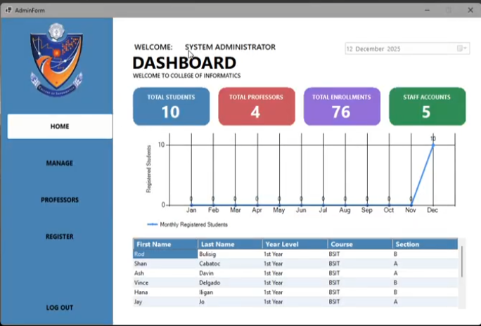
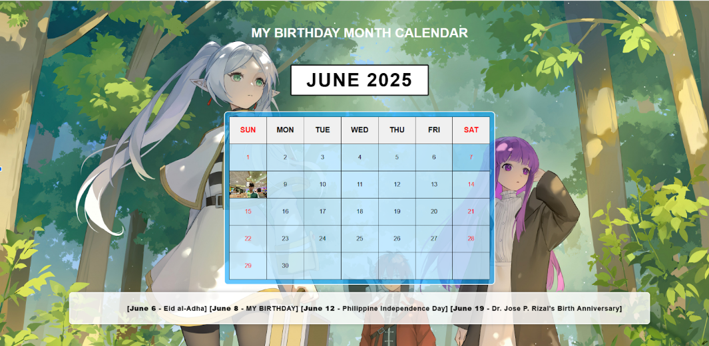
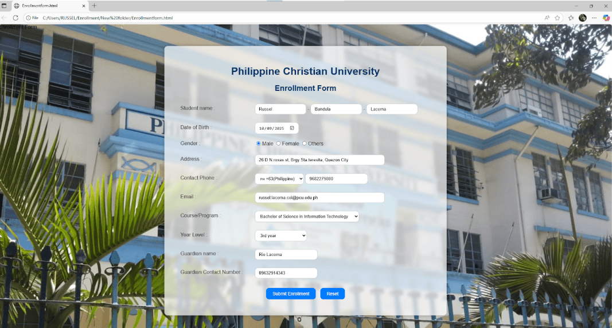
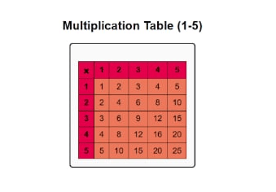

4TH YEAR BSIT STUDENT • PCU
Hi, I'm Russ.
I build, learn & explore tech.
I'm a Bachelor of Science in Information Technology student interested in IT support, networking, and web development. I learn best by building things and getting hands-on with technology.
BSITPCU
IT SupportOJT experience
4+projects
ProjectsLearning by building
CurrentlyExploring IT
01 — ABOUT
A little about me.
I'm Russ, a 4th-year BSIT student at Philippine Christian University. I'm still exploring where I fit best in tech, but I'm especially interested in practical IT work, networking, and building for the web.
My projects have taken me from simple HTML exercises to interactive websites and a database-backed attendance system. My IT Support OJT also gave me hands-on experience with computer hardware, deployment, troubleshooting, and basic networking tasks.
Based around
IT & Web
Learning style
Hands-on
Off-screen
Games & sports
02 — SKILLS
Things I'm learning & using.
These are presented as areas I've worked with, not exaggerated proficiency ratings.
Web Development
IT Support
Tools
Networking
Basic networking concepts and hands-on practice, including preparing Cat6 Ethernet cables during OJT.
03 — EXPERIENCE
Learning beyond the classroom.
My OJT gave me practical exposure to day-to-day IT support work, especially around hardware handling, computer setup, troubleshooting, and device deployment.
- Handled and assisted with deployment and retrieval of IT equipment.
- Practiced system-unit disassembly, cleaning, and hardware handling.
- Worked with computer formatting and operating-system installation.
- Practiced making Ethernet cables using Cat6.
- Assisted with equipment logging and support tasks.
04 — PROJECTS
Things I've built.
Small projects are still part of the journey. Each one represents something I learned.

01Academic Project
Attendance Tracking System
A student and teacher attendance system with registration, subject assignment, daily attendance, summaries, and database-backed records.

02Web Project
Birthday Month Calendar
An interactive monthly calendar with a birthday marker, date interactions, holidays, and important events.

03Web Project
Student Enrollment Form
A structured web form designed to collect student information required for enrollment.

04Beginner Project
Multiplication Table
A simple 1–5 multiplication table created as an introductory HTML exercise.
05 — BEYOND TECH
When I'm not coding...
🎮 Gaming
🏃 Jogging
🏸 Badminton
🏐 Volleyball
🎬 Movies
🍿 Anime
06 — CONTACT
Let's connect.
If you'd like to ask about my projects, skills, or experience, feel free to reach out.